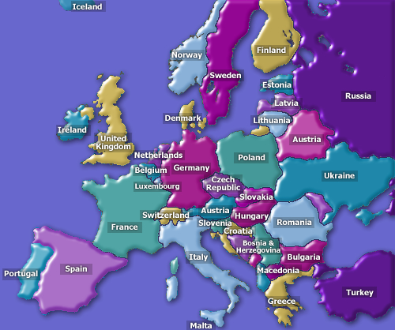
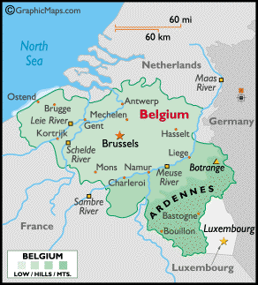
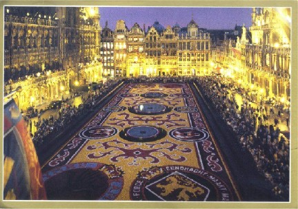
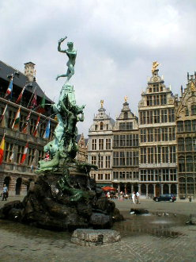
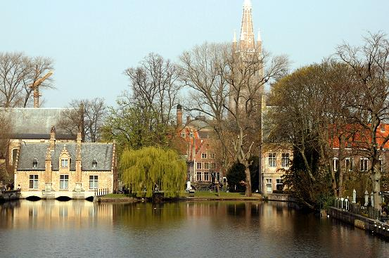
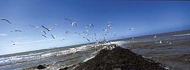

Tourist Information for Brussels and other major cities in Belgium
About Brussels
The conference takes place in Brussels, the capital of Belgium. Since the time that Belgium was still called Belgica by the Romans, up until its independence in 1830, our country has successively been part of the Roman Empire, Spain, Austria, France and the Netherlands. We were visited by the Vikings and just about everyone else. Culturally we have been influenced by all of them. You can easily find these influences in our cities like Brussels, Bruges, Antwerp and many more. Some famous Belgians you might have heard of are Adolf Sax, Pieter Paul Rubens, René Magritte, Panamarenko, Vesalius, Toots Thielemans and Victor Horta.
We have gathered here some condensed tourist information about Belgium and its major cities together with pointers to sites where you can find more. Upon your arrival at the conference, you will also receive a booklet which contains elaborate information about Brussels itself.
About Belgium
Location

Belgium is situated in the west of Europe, bordered to the north by the Netherlands, to the east by Germany and the Grand Duchy of Luxembourg and to the south and the west by France. Although its surface area of only 32,545 square kilometers makes it a small country, its location has made it the economic and urban centre of Europe.
Brussels, for instance, is not only Belgium's capital but also the one of Europe as it is the site of the headquarters of the European Commission, the Council of Ministers and the European Parliament. Other major international organizations, such as NATO, are also located in Brussels.
People
There are three communities living in Belgium. The Flemish, in the northern part of the country, speak Dutch and are the most numerous. They are followed by the Walloons, in the south, who speak French. Brussels is a bilingual region. Finally, in the far east of the country there is a small German-speaking community.
Although disparities exist between those living in different regions, Belgium is rated among the world's countries with the highest standard of living. Finally, crossed by language boundaries, socio-economic realities and different identity streams, Belgium has adopted an attitude of peaceful resolution of the conflicts that sometimes arise from this diversity. This is the famous "compromise Belgian style" which is said by some to be the source of the famous Belgian surrealist art.
What Belgium is most known for
Belgium is famous for its chocolate, waffles and its cuisine in general. Did you know that Flanders has more Michelin star restaurants per capita than France? Although every region has its special foods, the national dish of Belgium is considered to be mussels and fries. Belgium produces more than 800 different kinds of beers, ranging from lagers and white beers to trappists and seasonal beers. Belgium is also well known for its comic books : Tintin, De Smurfen (the Stroumpfs) and Suske en Wiske (Willy and Wandy). Belgium is also quite famous for its lace and diamond industry.
Currency
The currency used in Belgium is the European Union's Euro. At the time of writing, 1€ was worth about $1.47. You can see what the Euro looks like at the site of the european central bank.
All major credit cards are accepted in most shops, hotels and restaurants. Banks are open on weekdays from 09:00 to 16:00. Automatic teller machines are widely available.
Weather
Predicting the weather in Belgium is like predicting a lottery. The temperature varies between 15 and 30 degrees Celsius and we have an average of 14 days of rain during the month of July. This means some years we have 25 days and other years only 3 days of rain in July. The air is very moist in our summers on the warmer days. In the evening and at night we have 10 degrees C on bad days and 25 degrees on warm days.
Weather forecasts are available at http://www.meteo.be/meteo/view/
Brussels and other major cities
Major cities of Belgium

You can easily travel from Brussels to one of these cities using local trains (most of them are about one hour apart).
Brussels

Brussels is the bilingual capital of Belgium: both French (Bruxelles) and Dutch (Brussel) are the official languages of the city. Street names and traffic sings are always in these two languages. Furthermore, it is a cosmopolitan city where many different cultures live together and where different languages can be heard on each street. This liveliness and international flair is, of course, intimately related to its role as a crossroads for all of Europe.
The same variety and contrast can also be found in the different architectural styles that can be found in Brussels. Gothic cathedrals and churches are next to - and sometimes in stark contrast with - gracious classical facades like the buildings around the Royal Square or beautiful art nouveau and art deco houses. Brussels is the city par excellence in which this very special eclectic style had been given the free rein. The best examples are scattered all over the city. In the quartier Louise, you will discover the houses of architects Hankar and Horta. The area around the Etangs d'Ixelles (Ixelles Ponds) reflects the personalities of E. Blérot and L. Delune. On the way you will discover the charming Hotel Solvay, built by Victor Horta for the famous industrialist. Brussels also houses the Maison Tassel, the Hôtel Van Eetvelde, the house of painter Saint-Cyr and the Maison Cauchie, one of the most beautiful examples of Art Nouveau.
The heart of Brussels and the place to start getting to know the city is however the Grand Place. This historic market square with its splendid guild houses and the impressive Gothic beauty of the Town Hall, is widely considered to be one of the most beautiful town squares in Europe.
We cannot even begin to list all places to visit in Brussels and therefore kindly refer you to one of the following tourist sites. Upon your arrival at the conference, you will also receive a booklet containing an overview of all tourist attractions in Brussels.
http://www.brusselsinternational.be/
Antwerp

Antwerp lies on the banks of the River Scheldt and is with 500.000 inhabitants Belgium's second largest city. It is the second largest harbor of Europe (after Rotterdam). Moreover, Antwerp is a splendid city with numerous architectural highlights, most of which date from the 16th (the golden era of Antwerp) and the 17th century. The past is also represented by the numerous paintings of Peter Paul Rubens who lived in the Antwerp of the early 17th century.
If diamonds really are a girl's best friend, than a lot of ladies will not leave out a visit to the diamond district around the Railway Station as Antwerp is the diamond center of the World. This area is also the Jewish part of the city. The presence of many 'Chassidic' Jewish people gives the city a flair that cannot be found in other Belgian cities.
You can find more information about visiting Antwerp at: http://www.visitantwerp.be/indexuk.html and http://www.trabel.com/antwerp.htm
Bruges

Bruges is called : 'the Venice of the North'. This splendid medieval city is one of Belgium's crown jewels. In no other European city the feel and the look of medieval times are so present as here in this city close to the North Sea. The attractions of this magical place include a wide range of museums, churches, historical buildings and canals and streets that can be explored by boat, foot or horse.
You can find more information about visiting Bruges at http://www.visit-bruges.com/ and http://www.trabel.com/brugge.htm
Ghent
Ghent is one of the most beautiful historic cities in Europe which combines a mixture of past and present. The historic heart of Ghent offers a lot of places of interest. From St Michael's bridge there is a wonderful view on the skyline of Ghent with the three impressive towers of St Nicholas' Church, the Belfry with its bell tower and St Bavo's cathedral with the world famous painting "The Adoration of the Mystic Lamb" by Jan van Eyck. Much of the medieval city of Ghent has been preserved throughout the city. The old port with its guild halls on the Graslei and Korenlei is just one example of the beautiful views this city has to offer you.
The Castle of the Counts was once the medieval fortress of the Count of Flanders. Today it's one of Ghent's main tourist attractions. The city also has several museums, abbeys, beguinages, dozens of churches and historical buildings.
http://www.gent.be/gent/english/index.htm and http://www.trabel.com/gent.htm
Coastal region

When the summer heat turns oppressive in Brussels, do as the Belgians do: head for the coast of Flanders and take a dip in the North Sea.
The Flanders coast is situated only 120 kilometers to the west of Brussels. You can easily get there from Brussels by train or by car. Interestingly, it is about the shallowest part of the North Sea as at 10 km from the coast, it is barely 10 m deep. The natural dunes have in many places been flattened and replaced by a sea wall which was transformed into a long and wide promenade making a stroll by the sea a real pleasure.
The most popular tourist destinations along the coast line are the following:
- Blankenberge with a classic pier (built in 1933) and a Sea Life Center where visitors can view more than 70 types of fish from an underwater tunnel.
- De Panne, where there are still some of the original dunes left thus claiming a third of the dunes on the Flanders Coast.
- Oostende which is a thousand-year-old city with marinas, an old fishing port, a casino, a lively downtown, and high-speed ferry connections to England.
You can find more information about the coast at: http://www.dekust.org/EN/visitor/
Flanders Fields
From 1914 to 1918 the 'Westhoek', i.e. the area of Nieuwpoort, Diksmuide, Ieper (Ypres), Poperinge, was the scene of the Great War. Hundreds of thousands of soldiers of more than 20 nationalities fell in this conflict. After the often pointless battles and vast destruction, the Westhoek rose from its ashes. Today the Westhoek wants to spread a message of peace all over the world, with the In Flanders Fields Museum in Ypres, the IJzertoren in Diksmuide, the numerous military cemeteries, the war memorials and sites.
You can find more information on http://www.westhoek.be/wo1/.
Conference
- AOSD.08
- Program
- ›› Keynotes
- ›› Research Track
- ›› Workshops
- ›› Tutorials
- ›› Industry Track
- ›› Demonstrations
- ›› Social Events
- Student Extravaganza
- Calendar
- Registration
- Accommodation
- Local Information
- ›› AOSD Map
- ›› Reaching AOSD
- ›› Parking
- ›› Tourist Info
- Postcard Competition
- Promote AOSD.08
- Call For Contributions
- Past Conferences